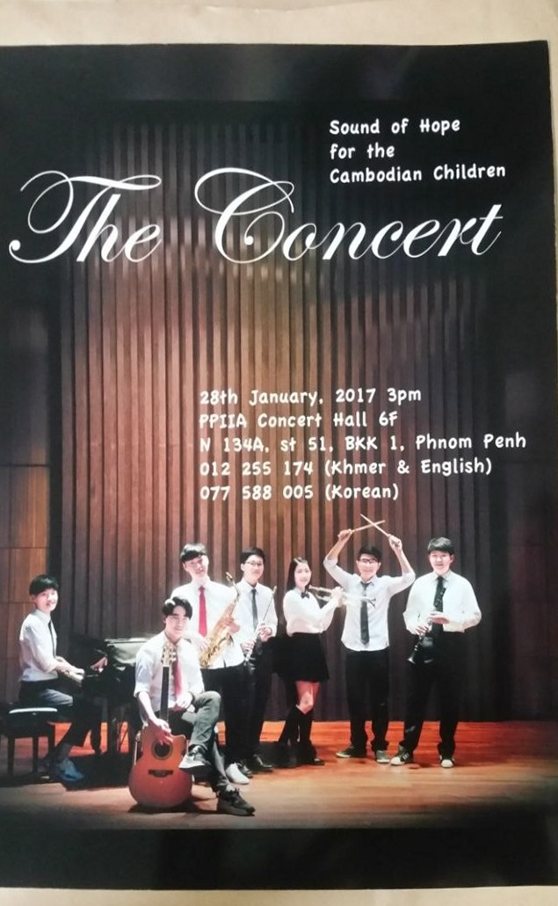
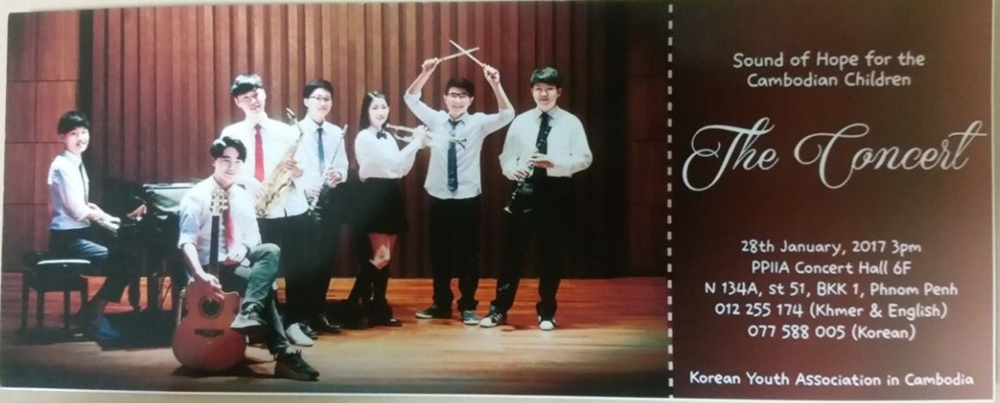
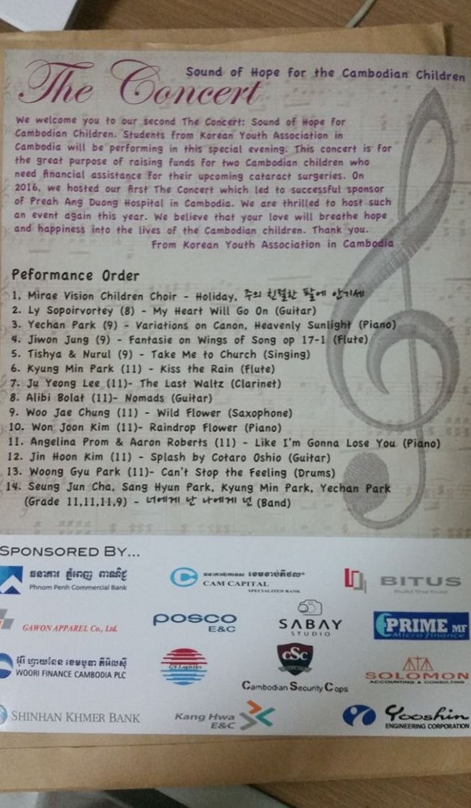

The Concert
"Sound of Hope for the Cambodian Children" is a charity concert organised by the Korean Youth Association in Cambodia, pairing Korean expatriate students with local Cambodian students for an evening of music. I led it two years running, in 2016 and 2017, and together the two concerts raised roughly $8,000 for Preah Ang Duong Hospital — funding cataract surgeries for two Cambodian children who needed the operations but couldn't afford them.
My Role — Project Lead
I led the concert for two consecutive years, 2016 and 2017 — pitching and securing sponsorship from local companies and financial institutions to cover venue and running costs, recruiting the student performers on both the Korean and Cambodian sides, and promoting the event so the hall would actually fill up. In the 2017 concert, I also performed — flute, alongside the local Cambodian students I'd spent six months rehearsing with.
Performance Order
Fourteen acts, spanning children's choir to solo piano, guitar, voice, woodwinds, drums, and a closing band number.
Impact
Across the two concerts I led, the 2016 concert helped sponsor Preah Ang Duong Hospital, and the 2017 concert raised $4,100, donated to Angduong National Eye Hospital to fund eye surgeries for two underprivileged Cambodian children. Only the 2017 concert is documented with figures and materials below.
Materials
The poster, ticket, and program from the second concert — the first concert (2016) isn't documented here, only the 2017 one.



Sponsors
Fourteen companies backed the second concert, secured through direct outreach as part of leading the event.